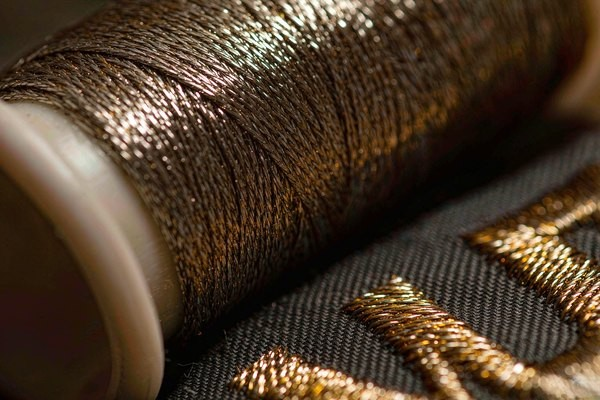
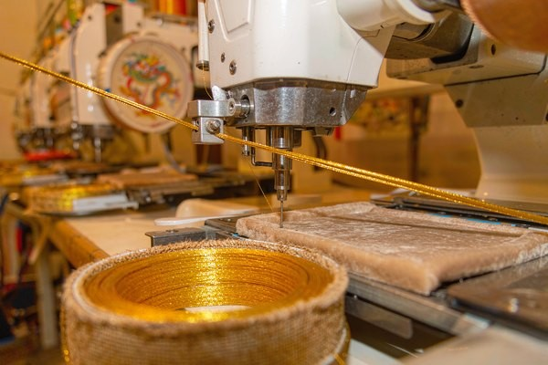

Metallic Thread Patches: Adding Shine Without the Headaches
Nothing says "premium patch" like real metallic thread — the same material behind military insignia, luxury fashion labels, and metallic thread patches on varsity jackets for the last century. But metallic embroidery has a reputation for broken threads, chewed lettering, and quotes that run 30% higher. Almost all of that pain is preventable with design choices made before the artwork ever reaches a machine. This guide explains what the thread actually is, why it misbehaves, the production settings that tame it, and where shine genuinely pays for itself.
1. What Metallic Thread Actually Is (and Why It Behaves Differently)
Modern metallic embroidery thread is not solid metal — it's a sandwich. A nylon or rayon core carries strength; around it, a flat ribbon of metallized polyester film is wound in a tight spiral, and a clear protective layer binds the two. The metal-free construction is what makes Lurex-type threads light enough to sew and reflective enough to look like jewelry under stage light.
That spiral foil construction is also the source of every metallic quirk. Each time the thread bends through the needle eye, whips around a stitch, or drags through fabric, the flat foil edge flexes and rubs. Flex it enough times and the foil work-hardens, cracks, and peels away from the core — the thread goes dull, then snaps. Standard polyester thread, a simple round fiber, shrugs off the same abuse. This single structural difference explains why metallic runs slower, breaks more, and demands wider, longer, gentler stitches. The tradition of stitching with real gold and silver — goldwork embroidery — goes back centuries, and modern metallic thread exists precisely to imitate that look at a fraction of the cost, inheriting some of the fragility in the bargain.

2. The Machine Settings That Keep Metallic Thread Alive
You don't need to run an embroidery machine to benefit from knowing this section — it's what separates a factory that can quote metallic work from one that quietly swaps your design to plain polyester. Four adjustments do most of the work:
| Parameter | Standard Polyester | Metallic Thread | Why It Changes |
|---|---|---|---|
| Machine speed | 800–1,200 spm | 500–700 spm | Less flexing per second means less foil fatigue |
| Needle | Standard 75/11 | Large-eye metallic 80/12 or 90/14 | A bigger eye lets the flat ribbon pass without scraping |
| Satin stitch length | ~0.4 mm column step | Wider, longer stitches | Short stitches multiply bends per centimeter |
| Thread tension | Standard | Loosened slightly | High tension concentrates stress at every needle hole |
| Underlay & backing | Standard | Denser underlay, firm backing | A stable base stops the fabric swallowing the stitch |
One consequence matters to buyers: metallic elements stitch roughly 30–50% slower, and slower machine time is what shows up on the quote. It's not the thread's purchase price driving the premium — it's the minutes.
3. Design Rules: Where Metallic Works and Where It Fights Back
The strongest metallic patch designs share a pattern: polyester body, metallic accents. A crown rendered in gold thread on a navy field outlined in silver — with every structural element in standard thread — delivers the luxury look at minimum risk and minimum cost. Flipping that ratio (a full patch in metallic fill) is where production pain begins: large metallic fills crack, catch light unevenly, and multiply every break risk for hours of run time.
- Think accents, not fills. Borders, stars, crowns, monogram letters, thin dividing lines — elements under roughly 15% of the patch area. This is the sweet spot where the shine reads as deliberate detail rather than tinsel.
- Respect the 8 mm text floor. Metallic thread is stiffer and thicker-feeling than polyester, and it can't hold tight stitch lengths — which is exactly what small letters need. As our text legibility guide explains, standard threads floor out at 4 mm; metallic text needs 8 mm and a bold sans-serif. The same constraint rules metallic lettering out of most cap-front designs, where the 2–2.5 inch panel leaves room for a name but not for 8 mm metallic script — the sizing tables in our hat branding guide apply directly.
- Choose satin over fill for metallic shapes. A metallic satin column glows like a solid bar of metal. A metallic fill (tatami) shatters the reflection into fragments and looks textured rather than shiny — sometimes a valid distressed look, rarely the "premium gold" clients imagine.
- Pair colors honestly. Gold thread reads warm against navy, burgundy, forest and black; silver reads clean against black, charcoal and jewel tones. Metallic-on-metallic (gold on silver) is the classic competition-regalia look, and also the hardest contrast to pull off at small sizes.
4. Where Shine Actually Pays Off
Metallic thread earns its premium in specific viewing conditions, not everywhere. It performs best under directional light — stage lighting, evening social light, camera flash — which is why it dominates music merch, esports emblems, formal club blazers, and quality-award patches. Under flat office daylight, the same thread looks merely warm-toned rather than gleaming, and a well-chosen high-sheen polyester (see our thread types comparison) can get you 70% of the look for none of the fragility.
The heritage lane is where metallic truly cannot be substituted: military insignia, police and fire dress uniforms, masonic and fraternal regalia, varsity letters, and luxury fashion labels. In those contexts the glint of real metallic thread is part of the semiotics — it signals rank, achievement, or price point before a single word is read. For those buyers the question is never whether to use metallic, only how much.

5. Cost Math and the Smart Alternatives
Quantified for budgeting: metallic thread material costs roughly 3–5× polyester per cone, but because thread is a small fraction of patch cost, the material itself adds only a few percent. The real premium — typically 20–40% on quotes — comes from slower machine time, higher thread-break rates (and the operator minutes to rethread), and slightly higher defect rejection. Accent-only designs land near the low end; full metallic fills near the high end.
When that premium doesn't fit the budget, three alternatives cover most needs:
| Alternative | Shine Level | Relative Cost | Tradeoff |
|---|---|---|---|
| High-sheen rayon or trilobal polyester | ★★★☆☆ | Baseline | Glossy but reads as color, not metal |
| 3D puff (gold or silver foam under thread) | ★★☆☆☆ | +10–20% | Dimensional pop, no true reflection |
| Metallic cord / tinsel couching | ★★★★★ | Premium | Hand-guided heritage look; tiny runs only |
| Real metallic thread (this guide) | ★★★★★ | +20–40% | The genuine article; needs the design rules above |
For most commercial patches, the winning move is the hybrid: high-sheen polyester body, genuine metallic thread reserved for one or two focal elements. You get the camera-catching moment where it counts and a quote that stays sane. If the design also needs a special silhouette or attachment, our custom shapes guide and backing types guide slot in without changing the thread strategy.
6. Care: Keeping the Shine Alive
Metallic foil is the patch component most vulnerable to laundry abuse. The rules that matter: wash inside out, cold water, gentle cycle — foil hates abrasion against other garments. Never iron directly over metallic stitching; the foil delaminates under heat the same way it cracks under flexing. Hand-wash is the gold standard for regalia-grade pieces. With that care, metallic accents hold their shine for years of wear — our sew-on attachment guide covers the attachment side, and a properly stitched metallic patch outlives the garment it's on.
Frequently Asked Questions (FAQ)
Q1: Why do metallic thread patches cost more?
Machine time, not materials. Metallic thread runs 30–50% slower, breaks more often, and needs rethreading pauses — that operator time is the 20–40% premium. Accent-only designs keep the premium near the low end of that range.
Q2: Can metallic thread be used for small text on a patch?
No — plan on 8 mm capital height minimum with bold letterforms. The thread can't hold the tight stitch lengths small letters require, so smaller metallic text chews up into fuzz. Use polyester for text and reserve metallic for larger elements.
Q3: Does metallic thread tarnish or fade?
The metallized film doesn't tarnish like real silver — but it can dull and flake with abrasion and UV over years. Modern protected films are far more durable than older generations. Wash inside out, avoid direct ironing, and the shine holds for the life of the garment.
Q4: Is there a difference between gold and silver metallic thread quality?
Yes, noticeably. Silver-toned films are generally the most durable and reflective; gold tones historically ran slightly weaker because the colorant layer sits in the foil stack. Quality varies more by manufacturer than by color, so buy on mill reputation rather than shade.
Q5: Can metallic thread be combined with 3D puff embroidery?
Technically yes, but it's the worst of both worlds: puff already needs simple bold shapes, and metallic already needs slow speeds and gentle handling. For raised gold-looking logos, gold puff foam under standard gold polyester thread delivers the look with a fraction of the production risk.
Conclusion: Spend Your Shine Where It Counts
Metallic thread patches succeed on restraint. A polyester body with one or two genuine metallic focal elements looks richer than a patch drowned in foil thread, costs 20% instead of 40%, runs faster, and survives laundering better. Give metallic lettering 8 mm, keep it to satin-stitch accents, wash it inside out — and the shine will still be doing its job at the ten-year mark.
Send us your artwork and we'll flag exactly which elements deserve real metallic thread and which will look identical in high-sheen polyester — with a free digital proof in 12 hours and no minimum order. Request a free quote and put your shine on a budget.